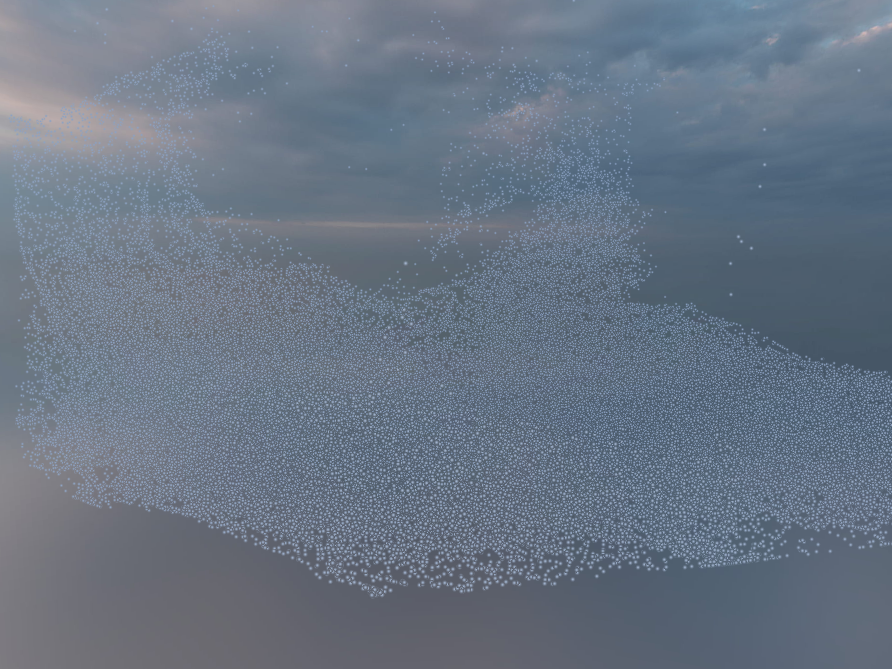
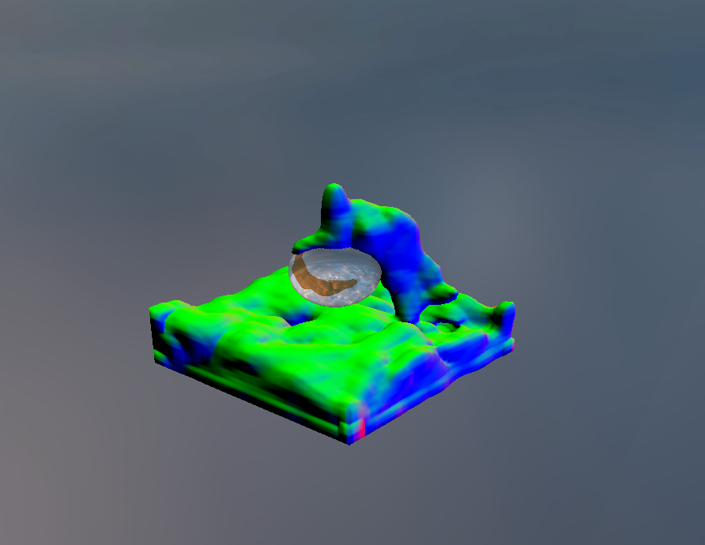
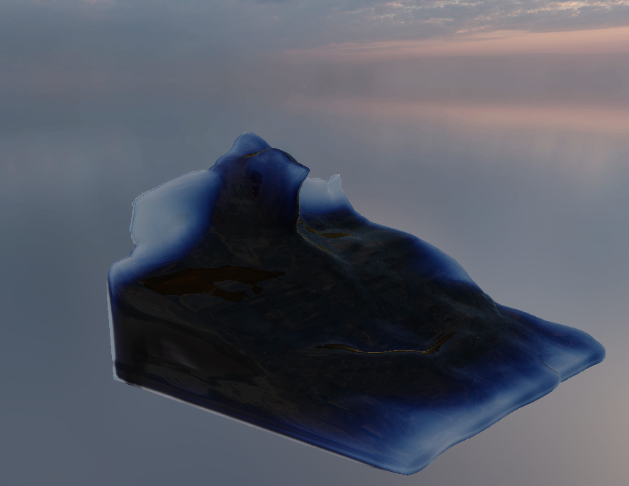
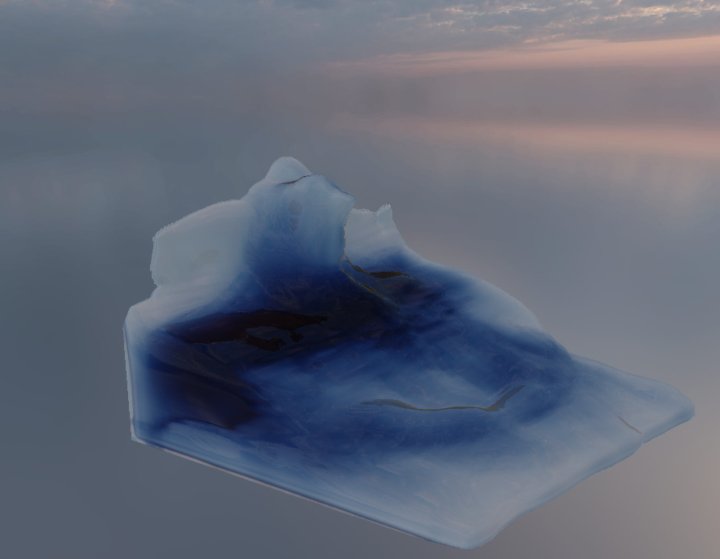

GPU-Accelerated Fluid Simulation — CS 184 Milestone Report
Team: Gracelynn Quek, Ruiyun Wang, Julian Vale, Aditya Bhargava
Our project successfully implemented 3D-fluid simulation for Newtonian fluids using a hybrid particle-grid method. We managed to successfully implement CUDA acceleration to take advantage of the GPU's faster parallel processing capabilities. As seen in our video below, we managed to successfully simulate fluids in real-time under a gravitational field with interactions with scene boundaries and other objects. In terms of performance, we managed to successfully simulate and render [number of] particles without any visible lag. In terms of future works, we could explore other atmospheric effects, such as fog and smoke, and potentially integration into a more dynamic 3D world.
The repository and build system are configured using CMake with vcpkg for dependency management. We set up an OpenGL rendering pipeline directly using GLAD and GLFW without additional abstraction libraries.
We implemented the particle system and integrated it with the basic rendering pipeline, allowing particles to be initialized and displayed as point sprites. Particle data is currently stored as a struct-of-arrays layout in anticipation of GPU memory access patterns, where coalesced reads across threads require the same field for many particles to be contiguous in memory.
On the CPU side, we implemented the two foundational components of the PIC/FLIP pipeline: the MAC (Marker-And-Cell) grid data structure, which stores velocity components on cell faces and pressure at cell centres, and the particle-to-grid (P2G) velocity transfer, which splats each particle's velocity onto nearby grid nodes using trilinear interpolation weights. These serve as a reference implementation ahead of GPU parallelisation.
Migrating the particle system to the GPU was relatively straightforward, as we have no collisions to process, meaning everything can be done in parallel with no interaction. We converted the particle simulation and particle-to-grid velocity transfer to a kernels running one thread per particle. This required some reworking of our datastructures, but allows us to avoid CPU-GPU memory transfers, which will bottleneck our simulation.
One complication arises when we parallelize the particle-to-grid transfer. When we splat the velocities onto the grid nodes we need to increment the total velocity at the node, which introduces a race condition. This was solved via atomic operations, but using a hashing and sorting system to retain the parallelism of the GPU even if many particles need to write to the same node on the grid would be the ideal solution.
With particle velocities splatted onto the grid, we solve for pressure to enforce incompressibility. The divergence of each fluid cell is computed as the net outward flux across its six faces using the staggered MAC velocities. We then run Jacobi iterations to solve the resulting Poisson equation, ping-ponging between two pressure buffers - d_pressure and d_pressure_tmp - swapping them each iteration so the solver always reads from the previous state and writes to the other. Air cell neighbors are treated as contributing pressure = 0 rather than being skipped, which correctly enforces the free-surface boundary condition and avoids inflating pressure at fluid-air interfaces. Once converged, the pressure gradient is subtracted from the velocity field on each face.
A key subtlety is that gravity is applied directly to the grid's v-faces on fluid-adjacent cells before the pressure solve, rather than to particles. This means the divergence the solver sees already includes gravitational acceleration, and the pressure response correctly counteracts it. After the solve, a boundary enforcement pass explicitly zeros normal velocity on all six domain walls.
For G2P, we snapshot the grid velocity field before the pressure solve begins. After the solve, each particle interpolates the velocity delta - post-solve minus pre-solve - from the staggered faces using trilinear weights, with coordinates clamped to the valid range to prevent extrapolation near walls. This delta is blended 95% FLIP / 5% PIC: FLIP adds the delta to the particle's existing velocity, preserving momentum and avoiding numerical dissipation, while the small PIC component damps instability by occasionally grounding the particle velocity to the absolute grid value.
The rendering pipeline is built on OpenGL 3.3 core profile using GLFW for windowing and GLAD for function loading. Particle positions are uploaded to the GPU each frame as a vertex buffer and rendered as point sprites using GL_POINTS. The vertex shader performs a simple perspective projection by dividing the particle's XY position by its depth, with point size scaled inversely with depth so closer particles appear larger. Particles behind the camera are clipped by mapping them off-screen.
The fragment shader renders each point sprite as a soft circular disc rather than a square. It uses gl_PointCoord to compute the distance from the point centre, discarding fragments outside the unit circle and applying an exponential falloff for a soft edge. Depth-based fog is applied using exponential attenuation — particles further from the camera blend towards a configurable fog colour — giving the simulation atmospheric depth. Both particle colour and fog density are exposed as uniforms controllable from the application.

The fluid is rendered using a raymarching approach with reflection and refraction. This volumetric approach, largely inspired by Sebastian Lague, enables us to have light fall off and scattering within the fluid, while also having a clearly defined surface.
In order to sample the density of the fluid for the raymarching, we wrote a compute shader that splats each particles' contribution to the density to a voxel grid, stored in a 3D texture. In the fragment shader, we trace a ray for each pixel, comparing the density of the fluid at each step of the ray to a set threshold. If the density is greater than the threshold, we compute the surface normal by comparing the difference in density in each direction.

The surface normal is then used to calculate the contributions of reflection and refraction for this ray. We march the rays corresponding to each of these contributions, scaling the refraction by the transmittance, until they intersect either the fluid surface again, or the sphere collider in scene 4.


To provide environmental context for the simulation, we implemented an environment dome — a large sphere (radius 50 units) surrounding the camera and all particles, with an equirectangular texture mapped to its interior surface. The dome is built procedurally at initialisation by tessellating a UV sphere into a triangle mesh with equirectangular UV coordinates. It is rendered before particles each frame with depth writes disabled (glDepthMask(GL_FALSE)) so it always appears in the background regardless of particle depth.
The dome uses a dedicated GLSL shader with a view-projection matrix uniform for correct perspective. The fragment shader samples the equirectangular texture and applies a brightness uniform for exposure control. Texture loading is handled via stb_image, which supports both standard JPG/PNG images and HDR equirectangular maps — for HDR inputs, the fragment shader applies Reinhard tone mapping and gamma correction (γ = 2.2) to correctly display high dynamic range values on a standard monitor.
CPU_ONLY CMake flag and #ifdef USE_CUDA guards throughout the codebase, allowing a fully functional CPU build that includes the rendering pipeline and CPU reference simulation.CPU_ONLY configuration enabling development on machines without NVIDIA GPUs.